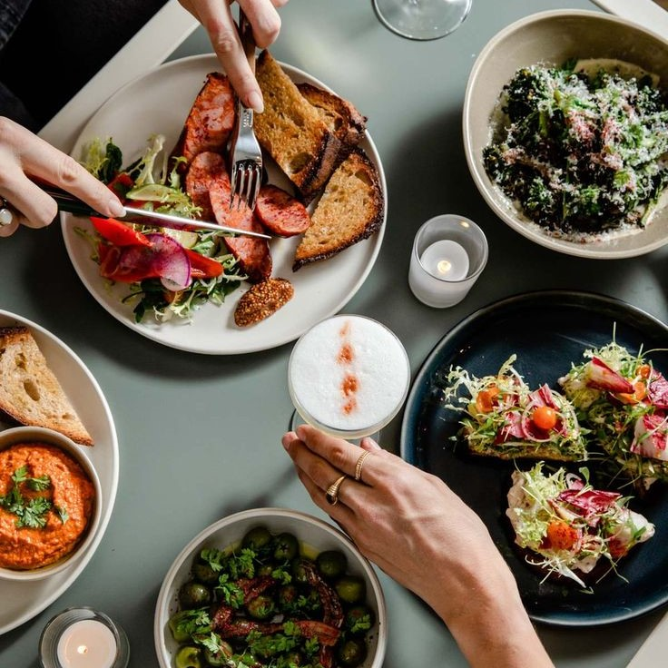
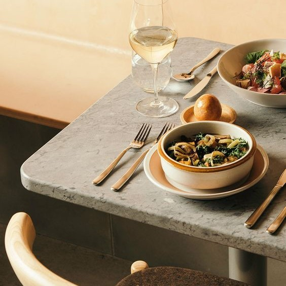

Welcome to Food Footsteps!
What is Food Footsteps?

This platform helps you discover the best cafes and eateries around Chennai. Whether you're craving a quick snack or a gourmet meal, we have something for everyone. Our listings cover a wide range of options, from budget-friendly street food to upscale dining experiences.
Start your food journey with us and experience Chennai like never before. Whether you’re a local or a visitor, Food Footsteps will guide you to the best dining experiences the city has to offer!
Get Started